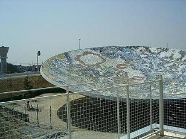
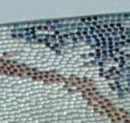
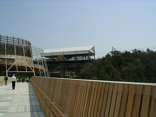
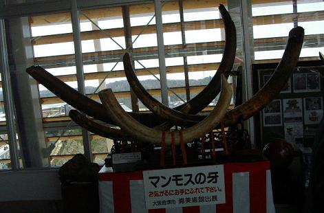
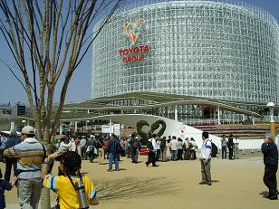
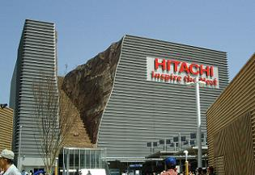

愛 ・ 地 球 博
(２００５．４．８）
ちょっと花ぐもりの絶好の万博日和ということで、行ってきました愛・地球博。
車で行こうかどうしようかと迷ったのですが、リニモにも乗ってみたかったので地下鉄で行くことに決め、藤が丘から三両編成のリニモに乗り換えて「瀬戸会場」のある終点の「万博矢草駅」を目指しました。
通勤電車ほどではありませんがほぼ満員であったほとんどの乗客は「万博会場前」で降りてしまい、見通しがよくなった前後の車両を通路から覗いて見てみると、私たちを入れて四人だけ残ったようでした。（＾ｍ＾；
しめしめ、予想通りにこちらは空いていそう…と、矢草駅から５分ほど歩いてシャトルバスに乗り換えますが、バスはすぐにやって来て１０人ほどの乗客を乗せて会場まで１０分足らずです。
１１時ごろの入場でしたが、だんなの希望通りにゲート前ではそれほど待たされることもなく、持ち物検査や金属探知機のゲートを潜って、入場券にぽちっ！と穴を開けてもらってやっと会場内へ…
待っていましたとばかりに、冷たいチーズかまぼこを配っているおみやげ屋さんがいましたが、これからパビリオンを巡り歩こうというのに冷蔵保管しなければならないようなみやげ物を今から買ってどうするんじゃ？
と、ひと口で食べてしまえるかまぼこをモグモグ食べながらあたりを見回すと、そのかまぼこやさんのある左奥にコンビニがあり、お茶を買いに入りましたが、
「もしも…もしもだけど…」
と、万が一お昼ご飯を食べそびれた場合を考えて、ミニおにぎり５個入りのパックをひとつペットボトルのお茶と一緒にだんなの持って来たカゴに入れ、あとはお任せ…（＾も＾
コンビニから一歩外へ出るなりそれぞれに選んできたお茶の蓋を開けて、先ずは暑かったのでゴクゴクと喉の渇きをいやし、入場ゲートから右側に当たる階段を登り始めると、
「なんだ、もう【モリゾー】に乗るのか？」
と、だんな。
「まさか！」
せっかく瀬戸会場まで来たのになにが悲しゅうて何処も見ないまま長久手会場行きのゴンドラに乗らにゃならんのか…


階段の上り口の左側に通路のようなものもありましたが、マイペース人間の私は迷うことなくさっさと階段を登り始めたものの、そう言われてみるとちょっと自信が薄れ、上から降りてきた人に聞いてみたところ、会場もゴンドラも上から行けるとのことで、安心して先へ進みました（＾ｍ＾
下の写真がその上の橋ですが、その橋の真ん中辺りに凸っとはみ出た展望台があり、そこから見えたのが瀬戸会場ならではの大きな「天水皿n」で、どうしてお尻に「n」がついているのかは解りませんが、このパラボラアンテナのような巨大なお皿は、魚のウロコのように見えていると思いますが、実はコーヒー茶碗の受け皿くらいの大きさのお皿が並べられて模様が描かれているのです。

瀬戸会場のほうではこのような一本の橋になっていましたが、長久手会場のほうではグローバルループと呼ばれる空中回廊になっているこの橋は、森林を保護するために伐採された間伐材が使われて作られているそうです。
節の多い間伐材は見た目が悪いので建築資材としては使われないそうで、れっきとした木材でありながら言わば処分に困っている資材を生かして、起伏の多い地形を車椅子を使用している人などが自由に移動できるように、各所にエレベーターが設置されていました。
橋の向こうの丸い建物は【市民パビリオン】で、真ん中の白い三角屋根がモリゾーゴンドラ乗り場です。
市民パビリオンの建物や建物の外壁に沿ってらせん状に作られている通路も、この橋と同じく間伐材が利用されており、下って行けば「海上広場」上に行けば市民パビリオンの入り口とゴンドラ乗り場となっています。
市民パビリオンには身障者用に工夫された、優れものが実演つきで紹介されていたり、英字新聞紙で作ったバラの花などの、廃品を利用した室内装飾品が展示されていたりで、気に入った物を投票できるようになっていました。

そして屋上は【ガラスの森】と称された飲食コーナーになっており、海上広場が一望できる展望台にもなっていました。
その一角でみつけたのがこのマンモスの牙!!
見て 触って 覗き込んで、撮影も自由…とあって入れ替わり立ち替わりにカメラや携帯を構えた人がシャッターを押していました。
海上広場にはビュッフェスタイルのレストランや焼そばなどの軽いものも売られているようで、長久手会場でもウィークデーならば食べるところに困ることはなさそうな感じでした。（＾～＾⊃モグモグ
ここでもう一つ見てきたのがちょうど整理券が配られていた【瀬戸日本館】で、入り口を入った１階では波打ったスクリーンに映し出される日本の四季折々の風景に織り込まれるように「和」を表す様々な模様のめぐり…
２階では真ん中にちょっと変わった丸いステージがあり、そのステージを囲むように十字に通路の作られた丸い段々の客席。その後ろには体育館などにあるような一段と高い壁に沿った通路が作られており、「群読 叙事詩劇・一粒の種」の３３人の演者が広い会場内を駆けめぐる劇的ライブシアターは、新鮮な感動を私たちに与えてくれました。
地元大学生が青竹三百本を使って作ったという日よけのある道や、千五百人の市民による手作りの不思議なモザイク、ぐるぐるに丸まった藤の蔓などのある海上広場ではテントの下に備えられたテーブルで昼食をとっている人たちの姿も目に入ってきて、そろそろお腹が空いてきた私たちもどこかに座って…と探したのですが、日よけのあるテーブル席は全て塞がっており、適当なところに腰をかけておにぎりをほお張っていると、やたらと人が目の前で立ち止まるので、一体何があるところに私たちは座っているのだろう？と振り返って見ると、
あちゃあー！
選りによって会場案内マップの前に座り込んでいました。△＾～＾；
市民パビリオンの下からエレベーターもあったようですが、てくてくと板の坂道を歩いていよいよモリゾーゴンドラに乗って長久手会場に向かうのですが、これもそんなに待つこともなく乗ることができ、通常ならば約７分で北ゲートに到着するとのことでしたが、風が強かったため徐行運転をしていると乗り場に書いてあり、６人乗りのゴンドラに乗り込んでみると
どこが徐行運転なんじゃー！？
と思わず叫んでしまったくらい早い！
しかも、けっこう高い！（＠＠;;
「うん うん（’’）」
と頷いたのは小学校に入ったばかりくらいの男の子を二人連れた若いお母さんで、目は宙をさまよっており、私たちよりちょっとだけ年配のご夫婦らしきペアの奥様はケロンとして色々説明をしてくれていました。
風にあおられて揺れるゴンドラはしばらくすると動きが緩やかになり、
なんだ！なんだ？と外を見ていると、ケロンの奥様の説明では最初はその場所に駅を作る予定だったのだそうで、小さな四角い箱の中から係員が眺めている前をゆっくりと通り過ぎて、ちょっと登りに入って元のスピードになったかと思うと、いきなり窓の外が真っ白になり、トンネルにでも入ったのかと思っていると、椅子の下にあるちょっとした隙間から見える景色は動いているようで、
「この辺りは民家があるので、窓ガラスが白くなるんですよ」
と、ケロンの奥様の説明を補足するように、
「何でも電気を通すとこういう風に白くなるんだそうです」
と、ご主人が教えてくれました。
へえぇーそんな技術があったんだ…
と、言いながらも揺れるゴンドラは外が見えなければ見えないだけに怖いものでした。
もしかしたら、近い将来カーテンのいらないガラス窓ができるかもしれない…などと考えていると、間もなく不思議な白い窓は普通のちょっと黒っぽい窓に戻り、またしても下を見て、
「ぐえぇー！（＠＠；」

モリゾーゴンドラの終点は長久手会場の北ゲートで、リニモの「万博会場駅」もここになります。
一番人気と言われるこの【トヨタグループ館】はゲートの東側（ゴンドラ乗り場方面）にありますので、入場候補に入っていたら先ず整理券を入手するために列に並ぶことをお勧めします。
ちなみに、私たちがこのパビリオン前にやって来たのは１２時３０分頃でしたが、整理券の配布が午後２時からと書いてあり、会場の前には沢山の人の行列が…
帰りの夜７時前に通りかかったときは最終入場である８時の整理券が配られておりました。

その隣にあったのがこの【日立館】で、建物が割れて階段が作ってあるというのが面白くてパチリ！
時間が決まっているのか、人出の多い土日のみなのかこの階段に水が流されるようですが、私たちが見たときはからからに乾いたこんな
階段が見えていました。
 続きを見る
続きを見る